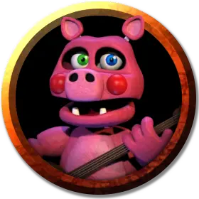

Поросёнок трясущий задом
Piggy Wiggle Butt
Средний Конструкт, хаотично-злой, именной НИП

Класс Доспеха 13 (шкурный доспех)
Хиты 15 (2к8 + 6)
Скорость 30 футов
| мод | спас | ||
|---|---|---|---|
| СИЛ | 16 | +3 | +3 |
| ЛОВ | 12 | +1 | +1 |
| ТЕЛ | 16 | +3 | +3 |
| мод | спас | ||
|---|---|---|---|
| ИНТ | 7 | −2 | −2 |
| МДР | 11 | +0 | +0 |
| ХАР | 10 | +0 | +0 |
Навыки Запугивание +2
Иммунитет к урону психическая энергия, яд
Иммунитет к состояниям глухота, испуг, истощение, окаменение, ослепление, отравление, очарование, паралич
Чувства тёмное зрение 60 футов, пассивное Восприятие 10
Языки Общий
Опасность 1/2 (100 опыта)
Бонус мастерства +2
Особенности
Агрессивный. Орк может бонусным действием переместиться на расстояние вплоть до показателя своей скорости по направлению к враждебному существу, которое он может видеть.
Действия
Глиняный кувшин. Рукопашная атака оружием: +5 к попаданию, досягаемость 5 футов, одна цель. Попадание: 7 (1к8 + 3) дробящего урона.
Описание
Поросёнок трясущий задом - антропоморфная свинья без штанов и без задницы. Она играет на глиняном кувшине и танцует.
У каждого из пяти автоматов, обслуживающих таверну, есть именная бирка, они очень дружелюбны к посетителям и заботятся о нуждах каждого, пока не придет время для Праздника бойни. Если на автомат нападают перед Бойней, он хихикает и повторяет народные поговорки, пока не будет уничтожен. В следующем раунде он волшебным образом возвращается к жизни полностью исцеленным, а затем спрашивает: "Что я могу для тебя сделать?"